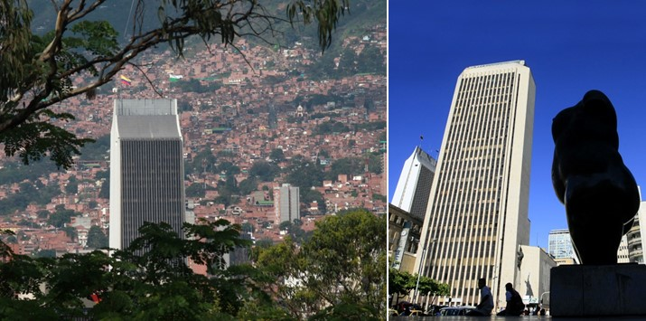
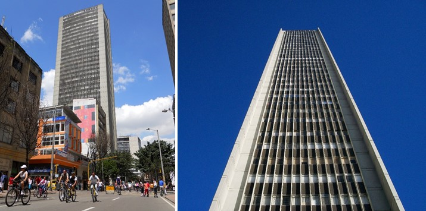

Principales Obras de Arquitectura
- Torres del parque
- Edificio Coltejer
- Edificio Avianca
Esta edificación fue diseñada por el arquitecto colombiano Rogelio Salmona entre 1965 y 1970. Es un conjunto residencial que está ubicado en el centro de Bogotá.

Se encuentra en el centro de Medellín. Su construcción inició en 1968, año en el que se demolieron el hotel Europa y el antiguo teatro Junín, la obra concluyó cuatro años después, en 1972; fue el edificio más alto del país hasta 1977 y uno de los más altos de Latinoamérica.

Está ubicado en el centro de Bogotá, en el parque Santander, sobre la carrera séptima con calle dieciséis. Su construcción se desarrolló entre 1966 y 1969, se edificó sobre el antiguo predio del Hotel Regina y fue el primer rascacielos que se hizo en Colombia y para la época uno de los más altos de Latinoamérica.
